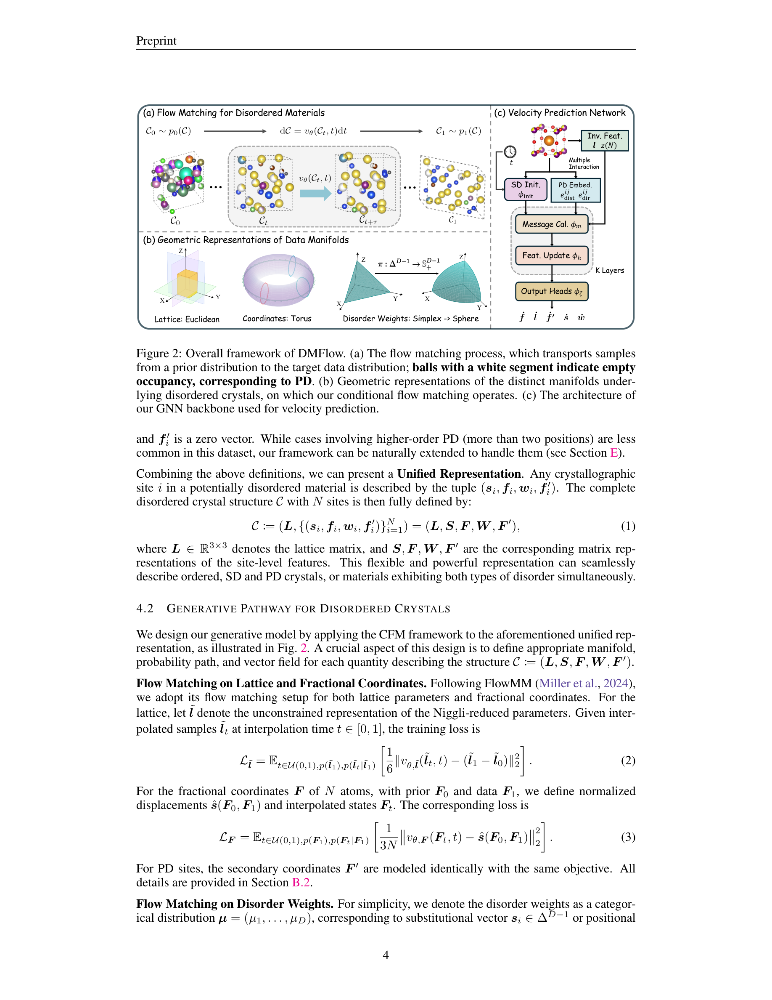
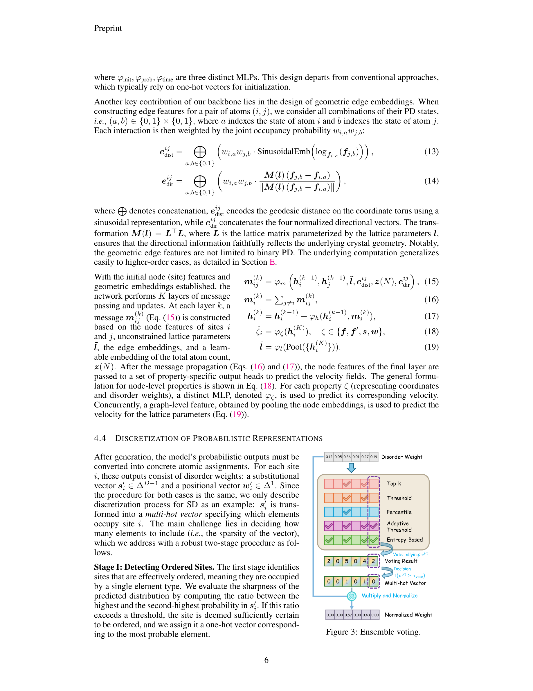
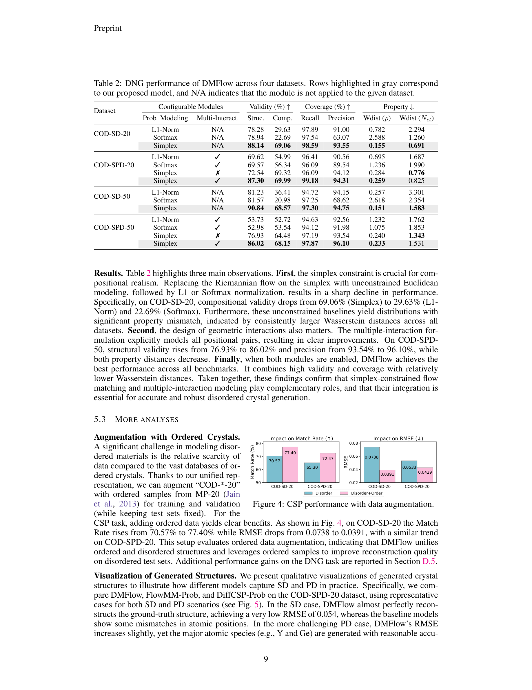
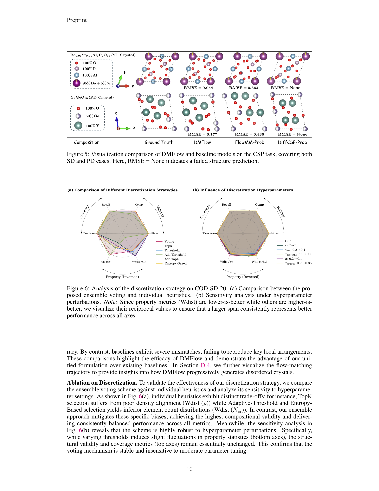

Figure 1
저자: Liming Wu, Rui Jiao, Qi Li, Mingze Li, Songyou Li, Shifeng Jin, Wenbing Huang | 날짜: 2026-02-04 | Repository: arXiv | DOI: 10.48550/arXiv.2602.04734
Figure 1
DMFlow는 비정렬(disordered) 결정 구조를 생성하기 위해 설계된 최초의 심층 생성 프레임워크이다. 치환 무질서(Substitutional Disorder, SD)와 위치 무질서(Positional Disorder, PD)를 통합적으로 표현하는 방식을 제안하고, simplex 제약조건을 만족시키기 위해 구면 재매개변수화(spherical reparameterization)를 활용한 Riemannian flow matching을 적용하여, Crystal Structure Prediction(CSP)과 De Novo Generation(DNG) 모두에서 기존 ordered crystal 생성 모델 대비 유의미한 성능 향상을 달성했다.

Figure 2

Figure 3

Figure 4

Figure 5
총평: 기존 심층 생성 모델이 전혀 다루지 못했던 비정렬 결정 생성이라는 새로운 문제를 정의하고, simplex 위 Riemannian flow matching이라는 수학적으로 우아한 해법을 제시한 선구적 연구이다. 벤치마크 구축과 통합 표현의 설계가 돋보이며, 후속 연구의 기반을 마련했다는 점에서 의의가 크다. 다만 실질적 재료 발견으로의 연결(안정성 검증, 물성 예측)이 부재하여 실용성 측면에서의 검증은 향후 과제로 남아 있다.